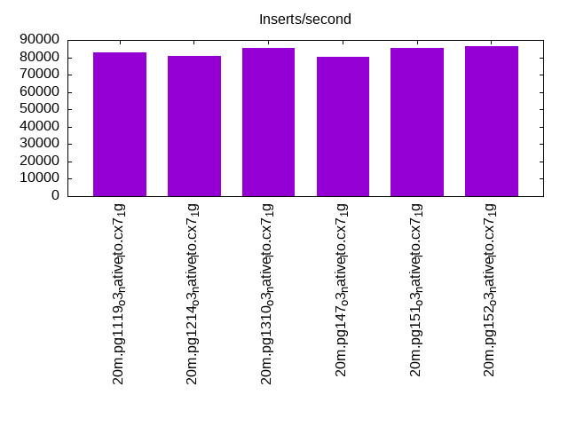
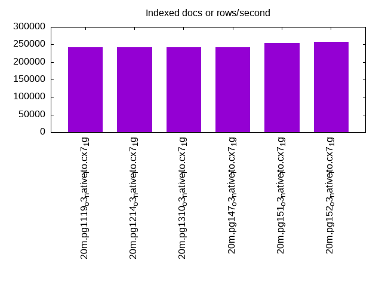
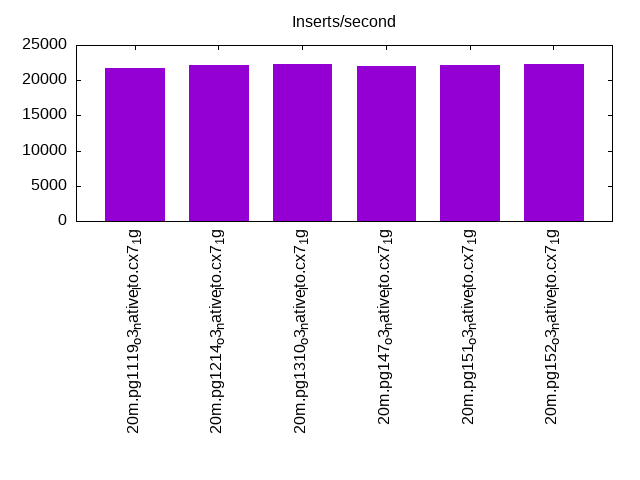
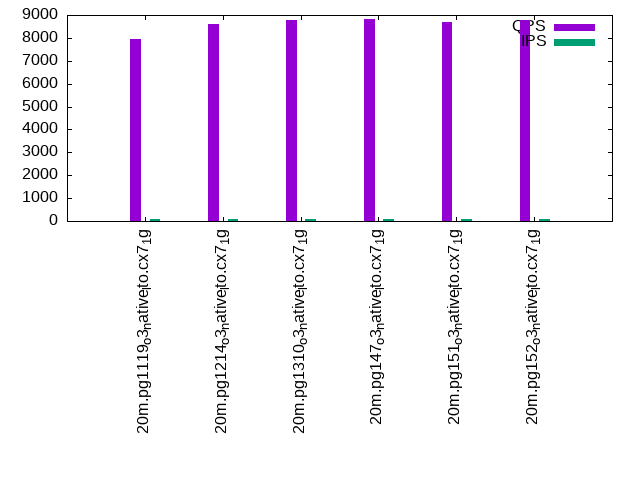
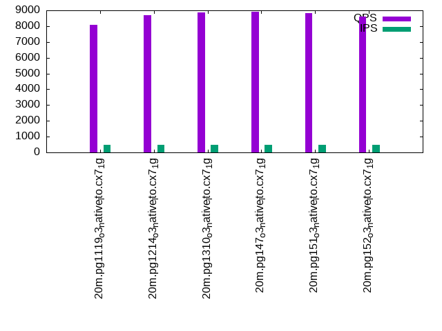
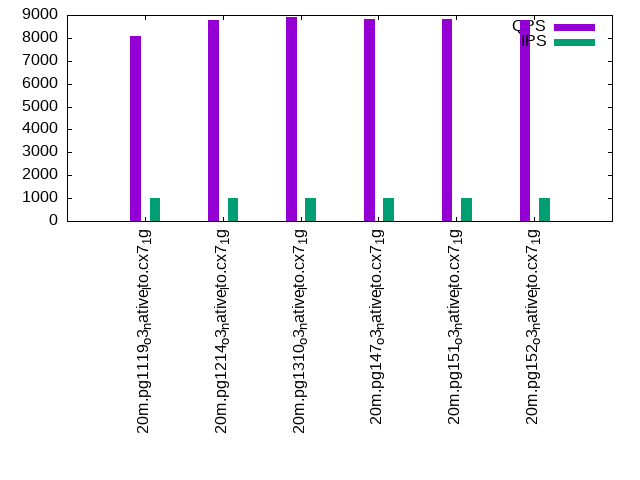

This is a report for the insert benchmark with 20M docs and 1 client(s). It is generated by scripts (bash, awk, sed) and Tufte might not be impressed. An overview of the insert benchmark is here and a short update is here. Below, by DBMS, I mean DBMS+version.config. An example is my8020.c10b40 where my means MySQL, 8020 is version 8.0.20 and c10b40 is the name for the configuration file.
The test server has 8 AMD cores, 16G RAM and an NVMe SSD. It is described here as the Beelink. The benchmark was run with 1 client and there were 1 or 2 connections per client (1 for queries, 1 for inserts). It uses 1 table. It loads 20M rows without secondary indexes, creates secondary indexes, loads another 20M rows then does 3 read+write tests for one hour each that do queries as fast as possible with 100, 500 and then 1000 writes/second/client concurrent with the queries. The database is cached by the OS but not by the database. Clients and the DBMS share one server. The per-database configs are in the per-database subdirectories here.
The tested DBMS are:
The numbers are inserts/s for l.i0 and l.i1, indexed docs (or rows) /s for l.x and queries/s for q*.2. The values are the average rate over the entire test for inserts (IPS) and queries (QPS). The range of values for IPS and QPS is split into 3 parts: bottom 25%, middle 50%, top 25%. Values in the bottom 25% have a red background, values in the top 25% have a green background and values in the middle have no color. A gray background is used for values that can be ignored because the DBMS did not sustain the target insert rate. Red backgrounds are not used when the minimum value is within 80% of the max value.
| dbms | l.i0 | l.x | l.i1 | q100.1 | q500.1 | q1000.1 |
|---|---|---|---|---|---|---|
| 20m.pg1119_o3_native_lto.cx7_1g | 82645 | 242169 | 21763 | 7952 | 8069 | 8086 |
| 20m.pg1214_o3_native_lto.cx7_1g | 80972 | 242169 | 22099 | 8620 | 8698 | 8761 |
| 20m.pg1310_o3_native_lto.cx7_1g | 85470 | 242169 | 22371 | 8765 | 8865 | 8927 |
| 20m.pg147_o3_native_lto.cx7_1g | 80321 | 242169 | 22075 | 8804 | 8920 | 8842 |
| 20m.pg151_o3_native_lto.cx7_1g | 85470 | 254430 | 22124 | 8685 | 8835 | 8824 |
| 20m.pg152_o3_native_lto.cx7_1g | 86580 | 257692 | 22296 | 8791 | 8598 | 8802 |
This table has relative throughput, throughput for the DBMS relative to the DBMS in the first line, using the absolute throughput from the previous table.
| dbms | l.i0 | l.x | l.i1 | q100.1 | q500.1 | q1000.1 |
|---|---|---|---|---|---|---|
| 20m.pg1119_o3_native_lto.cx7_1g | 1.00 | 1.00 | 1.00 | 1.00 | 1.00 | 1.00 |
| 20m.pg1214_o3_native_lto.cx7_1g | 0.98 | 1.00 | 1.02 | 1.08 | 1.08 | 1.08 |
| 20m.pg1310_o3_native_lto.cx7_1g | 1.03 | 1.00 | 1.03 | 1.10 | 1.10 | 1.10 |
| 20m.pg147_o3_native_lto.cx7_1g | 0.97 | 1.00 | 1.01 | 1.11 | 1.11 | 1.09 |
| 20m.pg151_o3_native_lto.cx7_1g | 1.03 | 1.05 | 1.02 | 1.09 | 1.09 | 1.09 |
| 20m.pg152_o3_native_lto.cx7_1g | 1.05 | 1.06 | 1.02 | 1.11 | 1.07 | 1.09 |
This lists the average rate of inserts/s for the tests that do inserts concurrent with queries. For such tests the query rate is listed in the table above. The read+write tests are setup so that the insert rate should match the target rate every second. Cells that are not at least 95% of the target have a red background to indicate a failure to satisfy the target.
| dbms | q100.1 | q500.1 | q1000.1 |
|---|---|---|---|
| pg1119_o3_native_lto.cx7_1g | 100 | 499 | 998 |
| pg1214_o3_native_lto.cx7_1g | 100 | 499 | 998 |
| pg1310_o3_native_lto.cx7_1g | 100 | 499 | 998 |
| pg147_o3_native_lto.cx7_1g | 100 | 499 | 998 |
| pg151_o3_native_lto.cx7_1g | 100 | 499 | 998 |
| pg152_o3_native_lto.cx7_1g | 100 | 499 | 998 |
| target | 100 | 500 | 1000 |
l.i0: load without secondary indexes. Graphs for performance per 1-second interval are here.
Average throughput:
Insert response time histogram: each cell has the percentage of responses that take <= the time in the header and max is the max response time in seconds. For the max column values in the top 25% of the range have a red background and in the bottom 25% of the range have a green background. The red background is not used when the min value is within 80% of the max value.
| dbms | 256us | 1ms | 4ms | 16ms | 64ms | 256ms | 1s | 4s | 16s | gt | max |
|---|---|---|---|---|---|---|---|---|---|---|---|
| pg1119_o3_native_lto.cx7_1g | 99.999 | 0.001 | 0.004 | ||||||||
| pg1214_o3_native_lto.cx7_1g | 99.999 | 0.001 | 0.004 | ||||||||
| pg1310_o3_native_lto.cx7_1g | 0.015 | 99.984 | 0.001 | 0.004 | |||||||
| pg147_o3_native_lto.cx7_1g | 99.999 | 0.001 | 0.004 | ||||||||
| pg151_o3_native_lto.cx7_1g | 0.003 | 99.995 | 0.002 | 0.006 | |||||||
| pg152_o3_native_lto.cx7_1g | 0.255 | 99.744 | 0.001 | 0.010 |
Performance metrics for the DBMS listed above. Some are normalized by throughput, others are not. Legend for results is here.
ips qps rps rmbps wps wmbps rpq rkbpq wpi wkbpi csps cpups cspq cpupq dbgb1 dbgb2 rss maxop p50 p99 tag 82645 0 0 0.0 164.3 39.3 0.000 0.000 0.002 0.487 10033 23.7 0.121 23 1.9 5.2 0.0 0.004 83205 72421 20m.pg1119_o3_native_lto.cx7_1g 80972 0 0 0.0 187.9 38.5 0.000 0.000 0.002 0.487 9852 23.7 0.122 23 1.9 5.2 0.0 0.004 81408 70425 20m.pg1214_o3_native_lto.cx7_1g 85470 0 0 0.0 161.5 40.6 0.000 0.000 0.002 0.486 10355 25.3 0.121 24 1.9 5.2 0.0 0.004 85906 76718 20m.pg1310_o3_native_lto.cx7_1g 80321 0 0 0.0 177.8 38.0 0.000 0.000 0.002 0.484 9754 22.8 0.121 23 1.9 5.2 0.0 0.004 80247 70223 20m.pg147_o3_native_lto.cx7_1g 85470 0 0 0.0 165.5 40.4 0.000 0.000 0.002 0.484 10268 23.7 0.120 22 1.9 5.2 0.1 0.006 85406 74421 20m.pg151_o3_native_lto.cx7_1g 86580 0 0 0.0 168.9 41.1 0.000 0.000 0.002 0.486 10454 22.6 0.121 21 1.9 5.2 0.0 0.010 86981 76160 20m.pg152_o3_native_lto.cx7_1g
l.x: create secondary indexes.
Average throughput:
Performance metrics for the DBMS listed above. Some are normalized by throughput, others are not. Legend for results is here.
ips qps rps rmbps wps wmbps rpq rkbpq wpi wkbpi csps cpups cspq cpupq dbgb1 dbgb2 rss maxop p50 p99 tag 242169 0 0 0.0 414.7 56.3 0.000 0.000 0.002 0.238 815 12.2 0.003 4 3.7 8.6 0.0 0.003 NA NA 20m.pg1119_o3_native_lto.cx7_1g 242169 0 0 0.0 449.0 55.2 0.000 0.000 0.002 0.233 760 12.2 0.003 4 3.7 8.6 0.0 0.003 NA NA 20m.pg1214_o3_native_lto.cx7_1g 242169 0 0 0.0 133.0 52.1 0.000 0.000 0.001 0.220 747 12.2 0.003 4 3.7 8.6 0.0 0.003 NA NA 20m.pg1310_o3_native_lto.cx7_1g 242169 0 0 0.0 138.0 50.3 0.000 0.000 0.001 0.213 719 12.1 0.003 4 3.7 8.6 0.0 0.003 NA NA 20m.pg147_o3_native_lto.cx7_1g 254430 0 0 0.0 127.0 50.7 0.000 0.000 0.000 0.204 767 12.4 0.003 4 3.7 8.6 0.0 0.003 NA NA 20m.pg151_o3_native_lto.cx7_1g 257692 0 0 0.0 152.6 54.0 0.000 0.000 0.001 0.214 738 11.9 0.003 4 3.7 8.6 0.0 0.003 NA NA 20m.pg152_o3_native_lto.cx7_1g
l.i1: continue load after secondary indexes created. Graphs for performance per 1-second interval are here.
Average throughput:
Insert response time histogram: each cell has the percentage of responses that take <= the time in the header and max is the max response time in seconds. For the max column values in the top 25% of the range have a red background and in the bottom 25% of the range have a green background. The red background is not used when the min value is within 80% of the max value.
| dbms | 256us | 1ms | 4ms | 16ms | 64ms | 256ms | 1s | 4s | 16s | gt | max |
|---|---|---|---|---|---|---|---|---|---|---|---|
| pg1119_o3_native_lto.cx7_1g | 99.989 | 0.011 | 0.015 | ||||||||
| pg1214_o3_native_lto.cx7_1g | 99.991 | 0.009 | 0.011 | ||||||||
| pg1310_o3_native_lto.cx7_1g | 99.991 | 0.009 | 0.016 | ||||||||
| pg147_o3_native_lto.cx7_1g | 99.987 | 0.013 | 0.001 | 0.017 | |||||||
| pg151_o3_native_lto.cx7_1g | 99.987 | 0.013 | nonzero | 0.021 | |||||||
| pg152_o3_native_lto.cx7_1g | 99.989 | 0.011 | nonzero | 0.019 |
Performance metrics for the DBMS listed above. Some are normalized by throughput, others are not. Legend for results is here.
ips qps rps rmbps wps wmbps rpq rkbpq wpi wkbpi csps cpups cspq cpupq dbgb1 dbgb2 rss maxop p50 p99 tag 21763 0 15 0.2 22888.8 268.2 0.001 0.008 1.052 12.617 6993 20.5 0.321 75 8.3 16.3 0.0 0.015 21775 19129 20m.pg1119_o3_native_lto.cx7_1g 22099 0 18 0.2 23108.1 271.3 0.001 0.010 1.046 12.572 7098 20.5 0.321 74 8.2 16.1 0.0 0.011 22336 17531 20m.pg1214_o3_native_lto.cx7_1g 22371 0 16 0.2 23138.9 274.3 0.001 0.008 1.034 12.555 7208 20.7 0.322 74 8.2 16.0 0.0 0.016 22584 17696 20m.pg1310_o3_native_lto.cx7_1g 22075 0 71 0.5 22897.8 273.4 0.003 0.023 1.037 12.682 7413 20.1 0.336 73 8.2 17.5 0.0 0.017 22374 17598 20m.pg147_o3_native_lto.cx7_1g 22124 0 73 0.5 23182.6 274.3 0.003 0.024 1.048 12.694 7158 20.0 0.324 72 8.2 17.5 0.0 0.021 22425 17530 20m.pg151_o3_native_lto.cx7_1g 22296 0 70 0.5 23146.9 277.8 0.003 0.022 1.038 12.757 7271 20.1 0.326 72 8.2 18.3 0.0 0.019 22575 17679 20m.pg152_o3_native_lto.cx7_1g
q100.1: range queries with 100 insert/s per client. Graphs for performance per 1-second interval are here.
Average throughput:
Query response time histogram: each cell has the percentage of responses that take <= the time in the header and max is the max response time in seconds. For max values in the top 25% of the range have a red background and in the bottom 25% of the range have a green background. The red background is not used when the min value is within 80% of the max value.
| dbms | 256us | 1ms | 4ms | 16ms | 64ms | 256ms | 1s | 4s | 16s | gt | max |
|---|---|---|---|---|---|---|---|---|---|---|---|
| pg1119_o3_native_lto.cx7_1g | 99.931 | 0.068 | 0.001 | nonzero | 0.006 | ||||||
| pg1214_o3_native_lto.cx7_1g | 99.965 | 0.034 | 0.001 | nonzero | 0.006 | ||||||
| pg1310_o3_native_lto.cx7_1g | 99.972 | 0.028 | nonzero | nonzero | 0.010 | ||||||
| pg147_o3_native_lto.cx7_1g | 99.947 | 0.052 | 0.001 | nonzero | 0.010 | ||||||
| pg151_o3_native_lto.cx7_1g | 99.945 | 0.054 | 0.001 | nonzero | 0.010 | ||||||
| pg152_o3_native_lto.cx7_1g | 99.948 | 0.051 | 0.001 | nonzero | 0.010 |
Insert response time histogram: each cell has the percentage of responses that take <= the time in the header and max is the max response time in seconds. For max values in the top 25% of the range have a red background and in the bottom 25% of the range have a green background. The red background is not used when the min value is within 80% of the max value.
| dbms | 256us | 1ms | 4ms | 16ms | 64ms | 256ms | 1s | 4s | 16s | gt | max |
|---|---|---|---|---|---|---|---|---|---|---|---|
| pg1119_o3_native_lto.cx7_1g | 98.944 | 1.056 | 0.012 | ||||||||
| pg1214_o3_native_lto.cx7_1g | 99.583 | 0.417 | 0.012 | ||||||||
| pg1310_o3_native_lto.cx7_1g | 99.944 | 0.056 | 0.005 | ||||||||
| pg147_o3_native_lto.cx7_1g | 99.806 | 0.194 | 0.012 | ||||||||
| pg151_o3_native_lto.cx7_1g | 99.611 | 0.389 | 0.012 | ||||||||
| pg152_o3_native_lto.cx7_1g | 99.889 | 0.111 | 0.012 |
Performance metrics for the DBMS listed above. Some are normalized by throughput, others are not. Legend for results is here.
ips qps rps rmbps wps wmbps rpq rkbpq wpi wkbpi csps cpups cspq cpupq dbgb1 dbgb2 rss maxop p50 p99 tag 100 7952 3 0.0 336.5 4.2 0.000 0.005 3.371 43.313 30661 13.6 3.856 137 8.3 15.2 0.0 0.006 7701 7495 20m.pg1119_o3_native_lto.cx7_1g 100 8620 0 0.0 335.9 4.2 0.000 0.000 3.369 43.506 33214 13.3 3.853 123 8.2 15.1 0.0 0.006 8358 8167 20m.pg1214_o3_native_lto.cx7_1g 100 8765 0 0.0 359.8 4.7 0.000 0.000 3.609 47.946 33764 13.3 3.852 121 8.2 13.9 0.0 0.010 8486 8255 20m.pg1310_o3_native_lto.cx7_1g 100 8804 1 0.0 374.9 4.5 0.000 0.001 3.757 46.488 33814 13.2 3.841 120 8.2 15.9 0.0 0.010 8566 8278 20m.pg147_o3_native_lto.cx7_1g 100 8685 2 0.0 357.5 4.5 0.000 0.001 3.582 45.753 33326 13.3 3.837 123 8.2 15.8 0.0 0.010 8454 8295 20m.pg151_o3_native_lto.cx7_1g 100 8791 2 0.0 402.4 5.1 0.000 0.001 4.036 52.224 33750 13.1 3.839 119 8.2 16.4 0.0 0.010 8517 8389 20m.pg152_o3_native_lto.cx7_1g
q500.1: range queries with 500 insert/s per client. Graphs for performance per 1-second interval are here.
Average throughput:
Query response time histogram: each cell has the percentage of responses that take <= the time in the header and max is the max response time in seconds. For max values in the top 25% of the range have a red background and in the bottom 25% of the range have a green background. The red background is not used when the min value is within 80% of the max value.
| dbms | 256us | 1ms | 4ms | 16ms | 64ms | 256ms | 1s | 4s | 16s | gt | max |
|---|---|---|---|---|---|---|---|---|---|---|---|
| pg1119_o3_native_lto.cx7_1g | 99.946 | 0.054 | nonzero | 0.003 | |||||||
| pg1214_o3_native_lto.cx7_1g | 99.944 | 0.056 | 0.001 | nonzero | 0.006 | ||||||
| pg1310_o3_native_lto.cx7_1g | 99.967 | 0.033 | nonzero | 0.003 | |||||||
| pg147_o3_native_lto.cx7_1g | 99.971 | 0.029 | nonzero | nonzero | 0.005 | ||||||
| pg151_o3_native_lto.cx7_1g | 99.970 | 0.030 | nonzero | nonzero | 0.005 | ||||||
| pg152_o3_native_lto.cx7_1g | 99.972 | 0.028 | nonzero | nonzero | 0.004 |
Insert response time histogram: each cell has the percentage of responses that take <= the time in the header and max is the max response time in seconds. For max values in the top 25% of the range have a red background and in the bottom 25% of the range have a green background. The red background is not used when the min value is within 80% of the max value.
| dbms | 256us | 1ms | 4ms | 16ms | 64ms | 256ms | 1s | 4s | 16s | gt | max |
|---|---|---|---|---|---|---|---|---|---|---|---|
| pg1119_o3_native_lto.cx7_1g | 99.567 | 0.433 | 0.015 | ||||||||
| pg1214_o3_native_lto.cx7_1g | 99.794 | 0.206 | 0.012 | ||||||||
| pg1310_o3_native_lto.cx7_1g | 99.844 | 0.156 | 0.012 | ||||||||
| pg147_o3_native_lto.cx7_1g | 99.833 | 0.167 | 0.012 | ||||||||
| pg151_o3_native_lto.cx7_1g | 99.733 | 0.267 | 0.012 | ||||||||
| pg152_o3_native_lto.cx7_1g | 99.783 | 0.217 | 0.012 |
Performance metrics for the DBMS listed above. Some are normalized by throughput, others are not. Legend for results is here.
ips qps rps rmbps wps wmbps rpq rkbpq wpi wkbpi csps cpups cspq cpupq dbgb1 dbgb2 rss maxop p50 p99 tag 499 8069 0 0.0 1366.6 16.9 0.000 0.000 2.740 34.621 31233 14.0 3.871 139 8.6 13.3 0.0 0.003 7719 7607 20m.pg1119_o3_native_lto.cx7_1g 499 8698 0 0.0 1355.8 16.8 0.000 0.000 2.717 34.397 33850 14.6 3.892 134 8.4 13.1 0.0 0.006 8326 8135 20m.pg1214_o3_native_lto.cx7_1g 499 8865 0 0.0 1371.7 16.8 0.000 0.000 2.748 34.416 34242 14.3 3.863 129 8.4 12.6 0.0 0.003 8550 8421 20m.pg1310_o3_native_lto.cx7_1g 499 8920 10 0.1 1370.5 16.8 0.001 0.008 2.748 34.510 34396 13.9 3.856 125 8.4 13.9 0.0 0.005 8550 8420 20m.pg147_o3_native_lto.cx7_1g 499 8835 10 0.1 1369.8 16.8 0.001 0.009 2.745 34.432 34014 13.8 3.850 125 8.4 13.7 0.0 0.005 8502 8406 20m.pg151_o3_native_lto.cx7_1g 499 8598 10 0.1 1367.0 16.7 0.001 0.009 2.740 34.343 33131 13.9 3.853 129 8.4 13.9 0.0 0.004 8294 8213 20m.pg152_o3_native_lto.cx7_1g
q1000.1: range queries with 1000 insert/s per client. Graphs for performance per 1-second interval are here.
Average throughput:
Query response time histogram: each cell has the percentage of responses that take <= the time in the header and max is the max response time in seconds. For max values in the top 25% of the range have a red background and in the bottom 25% of the range have a green background. The red background is not used when the min value is within 80% of the max value.
| dbms | 256us | 1ms | 4ms | 16ms | 64ms | 256ms | 1s | 4s | 16s | gt | max |
|---|---|---|---|---|---|---|---|---|---|---|---|
| pg1119_o3_native_lto.cx7_1g | 99.944 | 0.056 | nonzero | 0.003 | |||||||
| pg1214_o3_native_lto.cx7_1g | 99.957 | 0.043 | nonzero | nonzero | 0.010 | ||||||
| pg1310_o3_native_lto.cx7_1g | 99.962 | 0.037 | nonzero | nonzero | 0.007 | ||||||
| pg147_o3_native_lto.cx7_1g | 99.972 | 0.028 | nonzero | 0.003 | |||||||
| pg151_o3_native_lto.cx7_1g | 99.973 | 0.027 | nonzero | nonzero | 0.006 | ||||||
| pg152_o3_native_lto.cx7_1g | 99.973 | 0.027 | nonzero | nonzero | 0.010 |
Insert response time histogram: each cell has the percentage of responses that take <= the time in the header and max is the max response time in seconds. For max values in the top 25% of the range have a red background and in the bottom 25% of the range have a green background. The red background is not used when the min value is within 80% of the max value.
| dbms | 256us | 1ms | 4ms | 16ms | 64ms | 256ms | 1s | 4s | 16s | gt | max |
|---|---|---|---|---|---|---|---|---|---|---|---|
| pg1119_o3_native_lto.cx7_1g | 99.881 | 0.119 | 0.012 | ||||||||
| pg1214_o3_native_lto.cx7_1g | 99.842 | 0.158 | 0.005 | ||||||||
| pg1310_o3_native_lto.cx7_1g | 99.678 | 0.322 | 0.015 | ||||||||
| pg147_o3_native_lto.cx7_1g | 99.692 | 0.308 | 0.012 | ||||||||
| pg151_o3_native_lto.cx7_1g | 99.486 | 0.514 | 0.012 | ||||||||
| pg152_o3_native_lto.cx7_1g | 99.483 | 0.517 | 0.012 |
Performance metrics for the DBMS listed above. Some are normalized by throughput, others are not. Legend for results is here.
ips qps rps rmbps wps wmbps rpq rkbpq wpi wkbpi csps cpups cspq cpupq dbgb1 dbgb2 rss maxop p50 p99 tag 998 8086 0 0.0 2660.2 29.3 0.000 0.000 2.665 30.032 31464 14.9 3.891 147 9.3 13.6 0.0 0.003 7671 7479 20m.pg1119_o3_native_lto.cx7_1g 998 8761 0 0.0 2635.9 29.1 0.000 0.000 2.640 29.873 34040 15.3 3.885 140 9.0 13.3 0.0 0.010 8342 8197 20m.pg1214_o3_native_lto.cx7_1g 998 8927 5 0.1 2665.4 29.7 0.001 0.006 2.670 30.502 34687 15.5 3.886 139 9.0 13.1 0.0 0.007 8502 8363 20m.pg1310_o3_native_lto.cx7_1g 998 8842 1 0.0 2660.4 29.3 0.000 0.001 2.667 30.045 34297 14.2 3.879 128 9.0 14.2 0.0 0.003 8502 8373 20m.pg147_o3_native_lto.cx7_1g 998 8824 3 0.0 2663.8 29.3 0.000 0.002 2.668 30.041 34155 14.3 3.871 130 9.0 14.1 0.0 0.006 8518 8357 20m.pg151_o3_native_lto.cx7_1g 998 8802 3 0.0 2659.5 29.2 0.000 0.002 2.664 29.977 34078 14.2 3.872 129 9.0 14.2 0.0 0.010 8422 8309 20m.pg152_o3_native_lto.cx7_1g
l.i0: load without secondary indexes
Performance metrics for all DBMS, not just the ones listed above. Some are normalized by throughput, others are not. Legend for results is here.
ips qps rps rmbps wps wmbps rpq rkbpq wpi wkbpi csps cpups cspq cpupq dbgb1 dbgb2 rss maxop p50 p99 tag 82645 0 0 0.0 164.3 39.3 0.000 0.000 0.002 0.487 10033 23.7 0.121 23 1.9 5.2 0.0 0.004 83205 72421 20m.pg1119_o3_native_lto.cx7_1g 80972 0 0 0.0 187.9 38.5 0.000 0.000 0.002 0.487 9852 23.7 0.122 23 1.9 5.2 0.0 0.004 81408 70425 20m.pg1214_o3_native_lto.cx7_1g 85470 0 0 0.0 161.5 40.6 0.000 0.000 0.002 0.486 10355 25.3 0.121 24 1.9 5.2 0.0 0.004 85906 76718 20m.pg1310_o3_native_lto.cx7_1g 80321 0 0 0.0 177.8 38.0 0.000 0.000 0.002 0.484 9754 22.8 0.121 23 1.9 5.2 0.0 0.004 80247 70223 20m.pg147_o3_native_lto.cx7_1g 85470 0 0 0.0 165.5 40.4 0.000 0.000 0.002 0.484 10268 23.7 0.120 22 1.9 5.2 0.1 0.006 85406 74421 20m.pg151_o3_native_lto.cx7_1g 86580 0 0 0.0 168.9 41.1 0.000 0.000 0.002 0.486 10454 22.6 0.121 21 1.9 5.2 0.0 0.010 86981 76160 20m.pg152_o3_native_lto.cx7_1g
l.x: create secondary indexes
Performance metrics for all DBMS, not just the ones listed above. Some are normalized by throughput, others are not. Legend for results is here.
ips qps rps rmbps wps wmbps rpq rkbpq wpi wkbpi csps cpups cspq cpupq dbgb1 dbgb2 rss maxop p50 p99 tag 242169 0 0 0.0 414.7 56.3 0.000 0.000 0.002 0.238 815 12.2 0.003 4 3.7 8.6 0.0 0.003 NA NA 20m.pg1119_o3_native_lto.cx7_1g 242169 0 0 0.0 449.0 55.2 0.000 0.000 0.002 0.233 760 12.2 0.003 4 3.7 8.6 0.0 0.003 NA NA 20m.pg1214_o3_native_lto.cx7_1g 242169 0 0 0.0 133.0 52.1 0.000 0.000 0.001 0.220 747 12.2 0.003 4 3.7 8.6 0.0 0.003 NA NA 20m.pg1310_o3_native_lto.cx7_1g 242169 0 0 0.0 138.0 50.3 0.000 0.000 0.001 0.213 719 12.1 0.003 4 3.7 8.6 0.0 0.003 NA NA 20m.pg147_o3_native_lto.cx7_1g 254430 0 0 0.0 127.0 50.7 0.000 0.000 0.000 0.204 767 12.4 0.003 4 3.7 8.6 0.0 0.003 NA NA 20m.pg151_o3_native_lto.cx7_1g 257692 0 0 0.0 152.6 54.0 0.000 0.000 0.001 0.214 738 11.9 0.003 4 3.7 8.6 0.0 0.003 NA NA 20m.pg152_o3_native_lto.cx7_1g
l.i1: continue load after secondary indexes created
Performance metrics for all DBMS, not just the ones listed above. Some are normalized by throughput, others are not. Legend for results is here.
ips qps rps rmbps wps wmbps rpq rkbpq wpi wkbpi csps cpups cspq cpupq dbgb1 dbgb2 rss maxop p50 p99 tag 21763 0 15 0.2 22888.8 268.2 0.001 0.008 1.052 12.617 6993 20.5 0.321 75 8.3 16.3 0.0 0.015 21775 19129 20m.pg1119_o3_native_lto.cx7_1g 22099 0 18 0.2 23108.1 271.3 0.001 0.010 1.046 12.572 7098 20.5 0.321 74 8.2 16.1 0.0 0.011 22336 17531 20m.pg1214_o3_native_lto.cx7_1g 22371 0 16 0.2 23138.9 274.3 0.001 0.008 1.034 12.555 7208 20.7 0.322 74 8.2 16.0 0.0 0.016 22584 17696 20m.pg1310_o3_native_lto.cx7_1g 22075 0 71 0.5 22897.8 273.4 0.003 0.023 1.037 12.682 7413 20.1 0.336 73 8.2 17.5 0.0 0.017 22374 17598 20m.pg147_o3_native_lto.cx7_1g 22124 0 73 0.5 23182.6 274.3 0.003 0.024 1.048 12.694 7158 20.0 0.324 72 8.2 17.5 0.0 0.021 22425 17530 20m.pg151_o3_native_lto.cx7_1g 22296 0 70 0.5 23146.9 277.8 0.003 0.022 1.038 12.757 7271 20.1 0.326 72 8.2 18.3 0.0 0.019 22575 17679 20m.pg152_o3_native_lto.cx7_1g
q100.1: range queries with 100 insert/s per client
Performance metrics for all DBMS, not just the ones listed above. Some are normalized by throughput, others are not. Legend for results is here.
ips qps rps rmbps wps wmbps rpq rkbpq wpi wkbpi csps cpups cspq cpupq dbgb1 dbgb2 rss maxop p50 p99 tag 100 7952 3 0.0 336.5 4.2 0.000 0.005 3.371 43.313 30661 13.6 3.856 137 8.3 15.2 0.0 0.006 7701 7495 20m.pg1119_o3_native_lto.cx7_1g 100 8620 0 0.0 335.9 4.2 0.000 0.000 3.369 43.506 33214 13.3 3.853 123 8.2 15.1 0.0 0.006 8358 8167 20m.pg1214_o3_native_lto.cx7_1g 100 8765 0 0.0 359.8 4.7 0.000 0.000 3.609 47.946 33764 13.3 3.852 121 8.2 13.9 0.0 0.010 8486 8255 20m.pg1310_o3_native_lto.cx7_1g 100 8804 1 0.0 374.9 4.5 0.000 0.001 3.757 46.488 33814 13.2 3.841 120 8.2 15.9 0.0 0.010 8566 8278 20m.pg147_o3_native_lto.cx7_1g 100 8685 2 0.0 357.5 4.5 0.000 0.001 3.582 45.753 33326 13.3 3.837 123 8.2 15.8 0.0 0.010 8454 8295 20m.pg151_o3_native_lto.cx7_1g 100 8791 2 0.0 402.4 5.1 0.000 0.001 4.036 52.224 33750 13.1 3.839 119 8.2 16.4 0.0 0.010 8517 8389 20m.pg152_o3_native_lto.cx7_1g
q500.1: range queries with 500 insert/s per client
Performance metrics for all DBMS, not just the ones listed above. Some are normalized by throughput, others are not. Legend for results is here.
ips qps rps rmbps wps wmbps rpq rkbpq wpi wkbpi csps cpups cspq cpupq dbgb1 dbgb2 rss maxop p50 p99 tag 499 8069 0 0.0 1366.6 16.9 0.000 0.000 2.740 34.621 31233 14.0 3.871 139 8.6 13.3 0.0 0.003 7719 7607 20m.pg1119_o3_native_lto.cx7_1g 499 8698 0 0.0 1355.8 16.8 0.000 0.000 2.717 34.397 33850 14.6 3.892 134 8.4 13.1 0.0 0.006 8326 8135 20m.pg1214_o3_native_lto.cx7_1g 499 8865 0 0.0 1371.7 16.8 0.000 0.000 2.748 34.416 34242 14.3 3.863 129 8.4 12.6 0.0 0.003 8550 8421 20m.pg1310_o3_native_lto.cx7_1g 499 8920 10 0.1 1370.5 16.8 0.001 0.008 2.748 34.510 34396 13.9 3.856 125 8.4 13.9 0.0 0.005 8550 8420 20m.pg147_o3_native_lto.cx7_1g 499 8835 10 0.1 1369.8 16.8 0.001 0.009 2.745 34.432 34014 13.8 3.850 125 8.4 13.7 0.0 0.005 8502 8406 20m.pg151_o3_native_lto.cx7_1g 499 8598 10 0.1 1367.0 16.7 0.001 0.009 2.740 34.343 33131 13.9 3.853 129 8.4 13.9 0.0 0.004 8294 8213 20m.pg152_o3_native_lto.cx7_1g
q1000.1: range queries with 1000 insert/s per client
Performance metrics for all DBMS, not just the ones listed above. Some are normalized by throughput, others are not. Legend for results is here.
ips qps rps rmbps wps wmbps rpq rkbpq wpi wkbpi csps cpups cspq cpupq dbgb1 dbgb2 rss maxop p50 p99 tag 998 8086 0 0.0 2660.2 29.3 0.000 0.000 2.665 30.032 31464 14.9 3.891 147 9.3 13.6 0.0 0.003 7671 7479 20m.pg1119_o3_native_lto.cx7_1g 998 8761 0 0.0 2635.9 29.1 0.000 0.000 2.640 29.873 34040 15.3 3.885 140 9.0 13.3 0.0 0.010 8342 8197 20m.pg1214_o3_native_lto.cx7_1g 998 8927 5 0.1 2665.4 29.7 0.001 0.006 2.670 30.502 34687 15.5 3.886 139 9.0 13.1 0.0 0.007 8502 8363 20m.pg1310_o3_native_lto.cx7_1g 998 8842 1 0.0 2660.4 29.3 0.000 0.001 2.667 30.045 34297 14.2 3.879 128 9.0 14.2 0.0 0.003 8502 8373 20m.pg147_o3_native_lto.cx7_1g 998 8824 3 0.0 2663.8 29.3 0.000 0.002 2.668 30.041 34155 14.3 3.871 130 9.0 14.1 0.0 0.006 8518 8357 20m.pg151_o3_native_lto.cx7_1g 998 8802 3 0.0 2659.5 29.2 0.000 0.002 2.664 29.977 34078 14.2 3.872 129 9.0 14.2 0.0 0.010 8422 8309 20m.pg152_o3_native_lto.cx7_1g
Insert response time histogram
256us 1ms 4ms 16ms 64ms 256ms 1s 4s 16s gt max tag 0.000 0.000 99.999 0.001 0.000 0.000 0.000 0.000 0.000 0.000 0.004 pg1119_o3_native_lto.cx7_1g 0.000 0.000 99.999 0.001 0.000 0.000 0.000 0.000 0.000 0.000 0.004 pg1214_o3_native_lto.cx7_1g 0.000 0.015 99.984 0.001 0.000 0.000 0.000 0.000 0.000 0.000 0.004 pg1310_o3_native_lto.cx7_1g 0.000 0.000 99.999 0.001 0.000 0.000 0.000 0.000 0.000 0.000 0.004 pg147_o3_native_lto.cx7_1g 0.000 0.003 99.995 0.002 0.000 0.000 0.000 0.000 0.000 0.000 0.006 pg151_o3_native_lto.cx7_1g 0.000 0.255 99.744 0.001 0.000 0.000 0.000 0.000 0.000 0.000 0.010 pg152_o3_native_lto.cx7_1g
TODO - determine whether there is data for create index response time
Insert response time histogram
256us 1ms 4ms 16ms 64ms 256ms 1s 4s 16s gt max tag 0.000 0.000 99.989 0.011 0.000 0.000 0.000 0.000 0.000 0.000 0.015 pg1119_o3_native_lto.cx7_1g 0.000 0.000 99.991 0.009 0.000 0.000 0.000 0.000 0.000 0.000 0.011 pg1214_o3_native_lto.cx7_1g 0.000 0.000 99.991 0.009 0.000 0.000 0.000 0.000 0.000 0.000 0.016 pg1310_o3_native_lto.cx7_1g 0.000 0.000 99.987 0.013 0.001 0.000 0.000 0.000 0.000 0.000 0.017 pg147_o3_native_lto.cx7_1g 0.000 0.000 99.987 0.013 nonzero 0.000 0.000 0.000 0.000 0.000 0.021 pg151_o3_native_lto.cx7_1g 0.000 0.000 99.989 0.011 nonzero 0.000 0.000 0.000 0.000 0.000 0.019 pg152_o3_native_lto.cx7_1g
Query response time histogram
256us 1ms 4ms 16ms 64ms 256ms 1s 4s 16s gt max tag 99.931 0.068 0.001 nonzero 0.000 0.000 0.000 0.000 0.000 0.000 0.006 pg1119_o3_native_lto.cx7_1g 99.965 0.034 0.001 nonzero 0.000 0.000 0.000 0.000 0.000 0.000 0.006 pg1214_o3_native_lto.cx7_1g 99.972 0.028 nonzero nonzero 0.000 0.000 0.000 0.000 0.000 0.000 0.010 pg1310_o3_native_lto.cx7_1g 99.947 0.052 0.001 nonzero 0.000 0.000 0.000 0.000 0.000 0.000 0.010 pg147_o3_native_lto.cx7_1g 99.945 0.054 0.001 nonzero 0.000 0.000 0.000 0.000 0.000 0.000 0.010 pg151_o3_native_lto.cx7_1g 99.948 0.051 0.001 nonzero 0.000 0.000 0.000 0.000 0.000 0.000 0.010 pg152_o3_native_lto.cx7_1g
Insert response time histogram
256us 1ms 4ms 16ms 64ms 256ms 1s 4s 16s gt max tag 0.000 0.000 98.944 1.056 0.000 0.000 0.000 0.000 0.000 0.000 0.012 pg1119_o3_native_lto.cx7_1g 0.000 0.000 99.583 0.417 0.000 0.000 0.000 0.000 0.000 0.000 0.012 pg1214_o3_native_lto.cx7_1g 0.000 0.000 99.944 0.056 0.000 0.000 0.000 0.000 0.000 0.000 0.005 pg1310_o3_native_lto.cx7_1g 0.000 0.000 99.806 0.194 0.000 0.000 0.000 0.000 0.000 0.000 0.012 pg147_o3_native_lto.cx7_1g 0.000 0.000 99.611 0.389 0.000 0.000 0.000 0.000 0.000 0.000 0.012 pg151_o3_native_lto.cx7_1g 0.000 0.000 99.889 0.111 0.000 0.000 0.000 0.000 0.000 0.000 0.012 pg152_o3_native_lto.cx7_1g
Query response time histogram
256us 1ms 4ms 16ms 64ms 256ms 1s 4s 16s gt max tag 99.946 0.054 nonzero 0.000 0.000 0.000 0.000 0.000 0.000 0.000 0.003 pg1119_o3_native_lto.cx7_1g 99.944 0.056 0.001 nonzero 0.000 0.000 0.000 0.000 0.000 0.000 0.006 pg1214_o3_native_lto.cx7_1g 99.967 0.033 nonzero 0.000 0.000 0.000 0.000 0.000 0.000 0.000 0.003 pg1310_o3_native_lto.cx7_1g 99.971 0.029 nonzero nonzero 0.000 0.000 0.000 0.000 0.000 0.000 0.005 pg147_o3_native_lto.cx7_1g 99.970 0.030 nonzero nonzero 0.000 0.000 0.000 0.000 0.000 0.000 0.005 pg151_o3_native_lto.cx7_1g 99.972 0.028 nonzero nonzero 0.000 0.000 0.000 0.000 0.000 0.000 0.004 pg152_o3_native_lto.cx7_1g
Insert response time histogram
256us 1ms 4ms 16ms 64ms 256ms 1s 4s 16s gt max tag 0.000 0.000 99.567 0.433 0.000 0.000 0.000 0.000 0.000 0.000 0.015 pg1119_o3_native_lto.cx7_1g 0.000 0.000 99.794 0.206 0.000 0.000 0.000 0.000 0.000 0.000 0.012 pg1214_o3_native_lto.cx7_1g 0.000 0.000 99.844 0.156 0.000 0.000 0.000 0.000 0.000 0.000 0.012 pg1310_o3_native_lto.cx7_1g 0.000 0.000 99.833 0.167 0.000 0.000 0.000 0.000 0.000 0.000 0.012 pg147_o3_native_lto.cx7_1g 0.000 0.000 99.733 0.267 0.000 0.000 0.000 0.000 0.000 0.000 0.012 pg151_o3_native_lto.cx7_1g 0.000 0.000 99.783 0.217 0.000 0.000 0.000 0.000 0.000 0.000 0.012 pg152_o3_native_lto.cx7_1g
Query response time histogram
256us 1ms 4ms 16ms 64ms 256ms 1s 4s 16s gt max tag 99.944 0.056 nonzero 0.000 0.000 0.000 0.000 0.000 0.000 0.000 0.003 pg1119_o3_native_lto.cx7_1g 99.957 0.043 nonzero nonzero 0.000 0.000 0.000 0.000 0.000 0.000 0.010 pg1214_o3_native_lto.cx7_1g 99.962 0.037 nonzero nonzero 0.000 0.000 0.000 0.000 0.000 0.000 0.007 pg1310_o3_native_lto.cx7_1g 99.972 0.028 nonzero 0.000 0.000 0.000 0.000 0.000 0.000 0.000 0.003 pg147_o3_native_lto.cx7_1g 99.973 0.027 nonzero nonzero 0.000 0.000 0.000 0.000 0.000 0.000 0.006 pg151_o3_native_lto.cx7_1g 99.973 0.027 nonzero nonzero 0.000 0.000 0.000 0.000 0.000 0.000 0.010 pg152_o3_native_lto.cx7_1g
Insert response time histogram
256us 1ms 4ms 16ms 64ms 256ms 1s 4s 16s gt max tag 0.000 0.000 99.881 0.119 0.000 0.000 0.000 0.000 0.000 0.000 0.012 pg1119_o3_native_lto.cx7_1g 0.000 0.000 99.842 0.158 0.000 0.000 0.000 0.000 0.000 0.000 0.005 pg1214_o3_native_lto.cx7_1g 0.000 0.000 99.678 0.322 0.000 0.000 0.000 0.000 0.000 0.000 0.015 pg1310_o3_native_lto.cx7_1g 0.000 0.000 99.692 0.308 0.000 0.000 0.000 0.000 0.000 0.000 0.012 pg147_o3_native_lto.cx7_1g 0.000 0.000 99.486 0.514 0.000 0.000 0.000 0.000 0.000 0.000 0.012 pg151_o3_native_lto.cx7_1g 0.000 0.000 99.483 0.517 0.000 0.000 0.000 0.000 0.000 0.000 0.012 pg152_o3_native_lto.cx7_1g